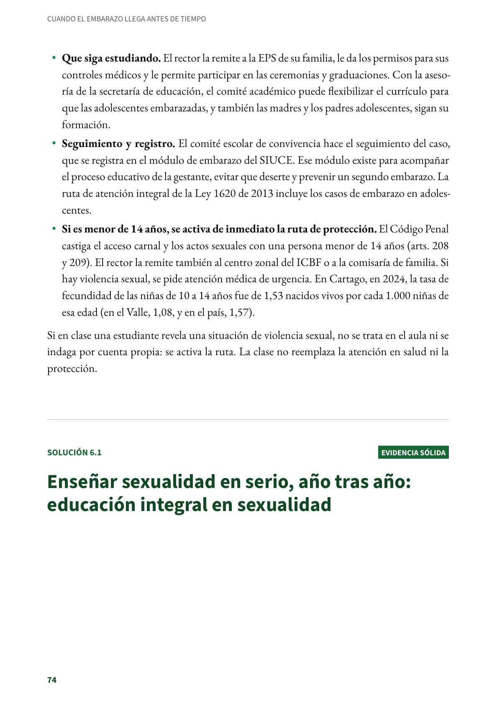
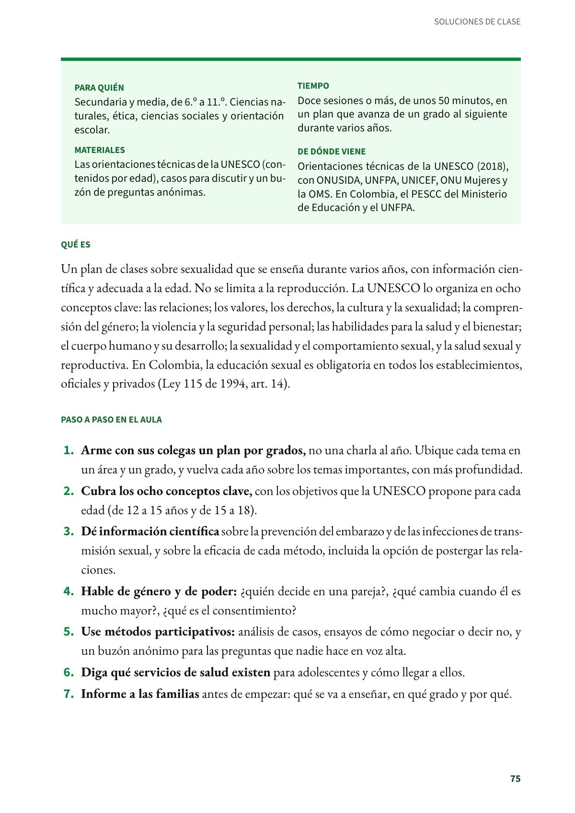
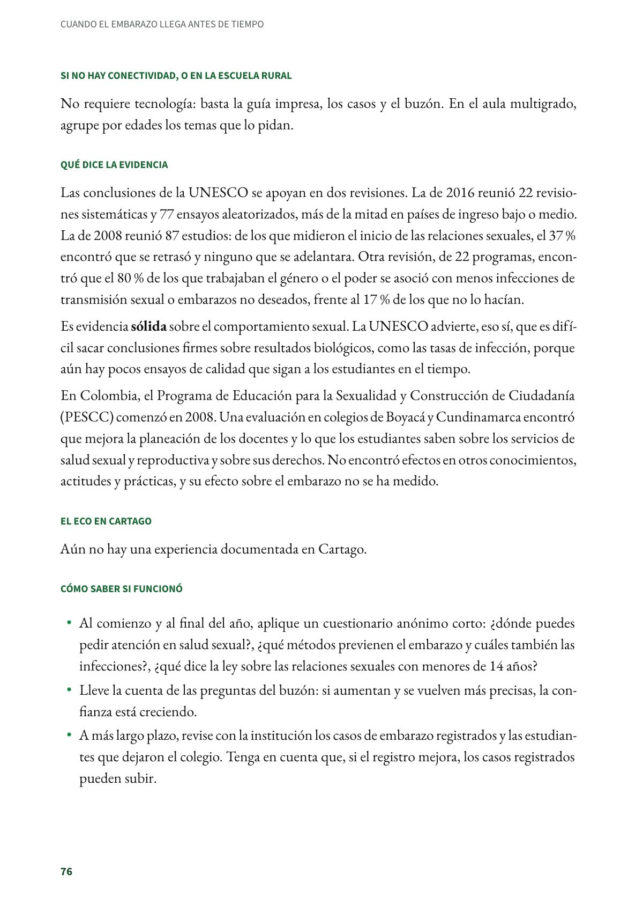

Enseñar sexualidad en serio, año tras año: educación integral en sexualidad
Un plan de clases sobre sexualidad que se enseña durante varios años, con información científica y adecuada a la edad. Secundaria y media, de 6.º a 11.º. Evidencia sólida.
PDF · 4 págs. · 82 KBEn resumen
- Evidencia: sólida.
- Para quién: Secundaria y media, de 6.º a 11.º. Ciencias naturales, ética, ciencias sociales y orientación escolar.
- Tiempo: Doce sesiones o más, de unos 50 minutos, en un plan que avanza de un grado al siguiente durante varios años.
- Materiales: Las orientaciones técnicas de la UNESCO (contenidos por edad), casos para discutir y un buzón de preguntas anónimas.
- De dónde viene: Orientaciones técnicas de la UNESCO (2018), con ONUSIDA, UNFPA, UNICEF, ONU Mujeres y la OMS. En Colombia, el PESCC del Ministerio de Educación y el UNFPA.
Qué es
Un plan de clases sobre sexualidad que se enseña durante varios años, con información científica y adecuada a la edad. No se limita a la reproducción. La UNESCO lo organiza en ocho conceptos clave: las relaciones; los valores, los derechos, la cultura y la sexualidad; la comprensión del género; la violencia y la seguridad personal; las habilidades para la salud y el bienestar; el cuerpo humano y su desarrollo; la sexualidad y el comportamiento sexual, y la salud sexual y reproductiva. En Colombia, la educación sexual es obligatoria en todos los establecimientos, oficiales y privados (Ley 115 de 1994, art. 14).
Paso a paso en el aula
- Arme con sus colegas un plan por grados, no una charla al año. Ubique cada tema en un área y un grado, y vuelva cada año sobre los temas importantes, con más profundidad.
- Cubra los ocho conceptos clave, con los objetivos que la UNESCO propone para cada edad (de 12 a 15 años y de 15 a 18).
- Dé información científica sobre la prevención del embarazo y de las infecciones de transmisión sexual, y sobre la eficacia de cada método, incluida la opción de postergar las relaciones.
- Hable de género y de poder: ¿quién decide en una pareja?, ¿qué cambia cuando él es mucho mayor?, ¿qué es el consentimiento?
- Use métodos participativos: análisis de casos, ensayos de cómo negociar o decir no, y un buzón anónimo para las preguntas que nadie hace en voz alta.
- Diga qué servicios de salud existen para adolescentes y cómo llegar a ellos.
- Informe a las familias antes de empezar: qué se va a enseñar, en qué grado y por qué.
Si no hay conectividad, o en la escuela rural
No requiere tecnología: basta la guía impresa, los casos y el buzón. En el aula multigrado, agrupe por edades los temas que lo pidan.
Qué dice la evidencia
Las conclusiones de la UNESCO se apoyan en dos revisiones. La de 2016 reunió 22 revisiones sistemáticas y 77 ensayos aleatorizados, más de la mitad en países de ingreso bajo o medio. La de 2008 reunió 87 estudios: de los que midieron el inicio de las relaciones sexuales, el 37 % encontró que se retrasó y ninguno que se adelantara. Otra revisión, de 22 programas, encontró que el 80 % de los que trabajaban el género o el poder se asoció con menos infecciones de transmisión sexual o embarazos no deseados, frente al 17 % de los que no lo hacían.
Es evidencia sólida sobre el comportamiento sexual. La UNESCO advierte, eso sí, que es difícil sacar conclusiones firmes sobre resultados biológicos, como las tasas de infección, porque aún hay pocos ensayos de calidad que sigan a los estudiantes en el tiempo.
En Colombia, el Programa de Educación para la Sexualidad y Construcción de Ciudadanía (PESCC) comenzó en 2008. Una evaluación en colegios de Boyacá y Cundinamarca encontró que mejora la planeación de los docentes y lo que los estudiantes saben sobre los servicios de salud sexual y reproductiva y sobre sus derechos. No encontró efectos en otros conocimientos, actitudes y prácticas, y su efecto sobre el embarazo no se ha medido.
El eco en Cartago
Aún no hay una experiencia documentada en Cartago.
Cómo saber si funcionó
- Al comienzo y al final del año, aplique un cuestionario anónimo corto: ¿dónde puedes pedir atención en salud sexual?, ¿qué métodos previenen el embarazo y cuáles también las infecciones?, ¿qué dice la ley sobre las relaciones sexuales con menores de 14 años?
- Lleve la cuenta de las preguntas del buzón: si aumentan y se vuelven más precisas, la confianza está creciendo.
- A más largo plazo, revise con la institución los casos de embarazo registrados y las estudiantes que dejaron el colegio. Tenga en cuenta que, si el registro mejora, los casos registrados pueden subir.
Lo que no hay que hacer
Reducir el programa a una charla, quitar los temas incómodos o enseñar solo la abstinencia. Tampoco conviene usar como ejemplo los casos de estudiantes del colegio: expone a quien ya vive la situación.
Fuentes
Congreso de la República de Colombia. (1994). Ley 115 de 1994, art. 14. secretariasenado.gov.co
Cortés, D., Flórez, C. E., Ibarra, M. C., Martínez, D. y Vargas Trujillo, E. (2016). Educación de la sexualidad, prácticas docentes y conocimientos de los estudiantes: una evaluación del Programa de Educación para la Sexualidad y Construcción de Ciudadanía (PESCC) (Documento de trabajo n.º 187). Universidad del Rosario. repository.urosario.edu.co
Haberland, N. A. (2015). The case for addressing gender and power in sexuality and HIV education: A comprehensive review of evaluation studies. International Perspectives on Sexual and Reproductive Health, 41(1), 31–42. doi.org
UNESCO, ONUSIDA, UNFPA, UNICEF, ONU Mujeres y OMS. (2018). International technical guidance on sexuality education: An evidence-informed approach (ed. rev.). UNESCO. unesdoc.unesco.org
Así se ve en el libro
4 páginas

